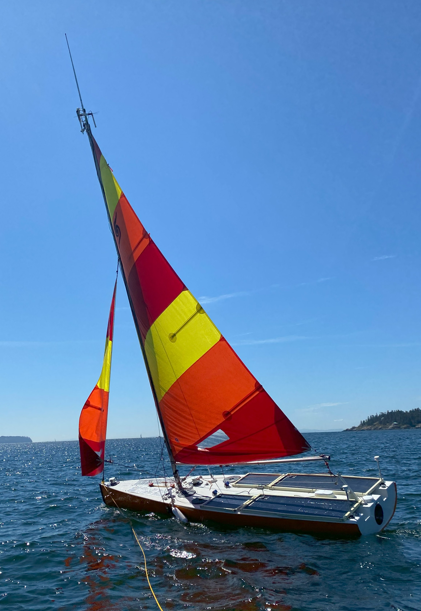
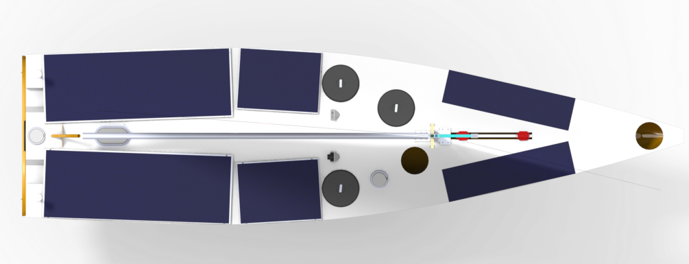
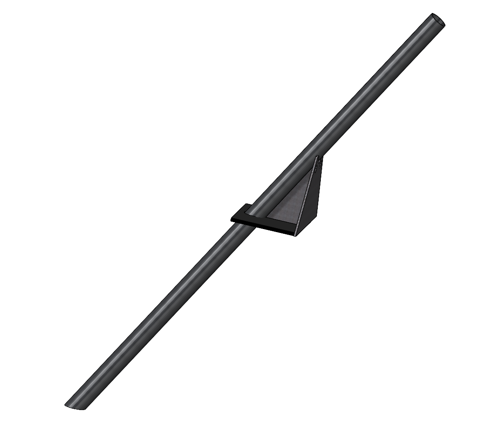
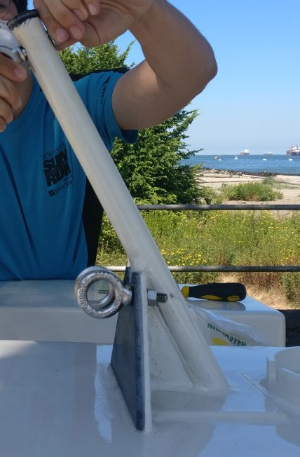
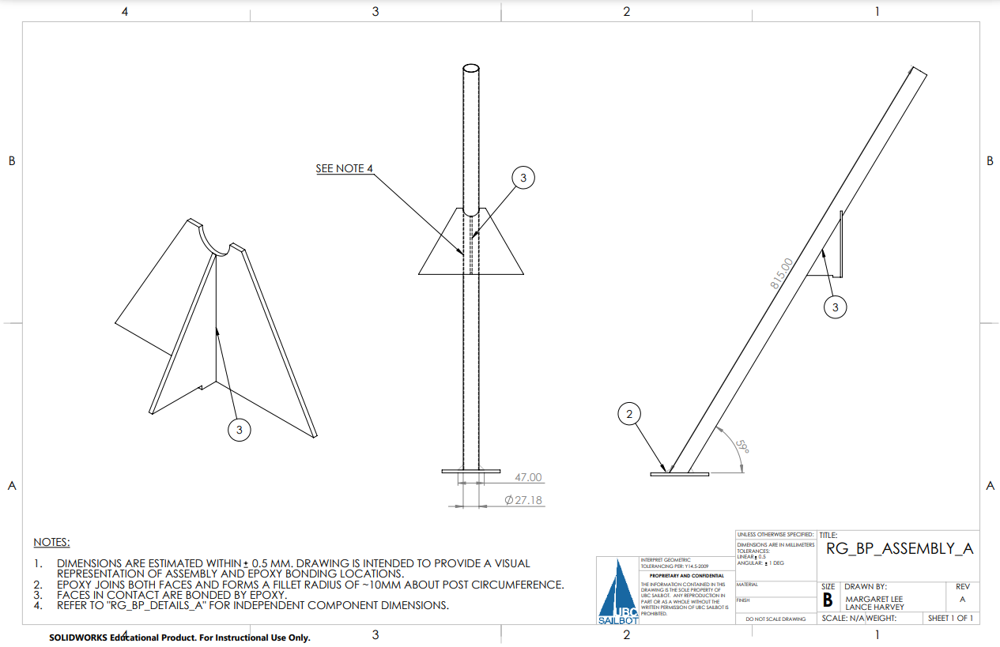
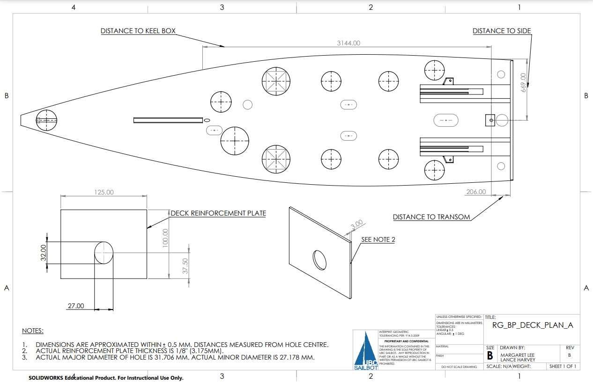

Overview:
Raye was a 5.5-metre fully autonomous sailboat made to sail the Pacific Ocean. I worked with two others to create
a boom post to redirect force from the rigging system to a structurally reinforced location and mantain
alignment of the mainsheet. I designed parts in SolidWorks and created drawings to be used in manufacturing
and calculated shearing and tensile stresses experienced by components and by the epoxy at part-part and
part-hull interfaces. Finally, we manufactured the assembly with carbon fibre composites and mounted it
onto the boat. As I was only a first-year student, I learned a lot about designing for manufacturing and
best practices for SolidWorks and drawings.
SolidWorks
Engineering drawings
Composites
Hand tools (saw, drill, Dremel)

Raye during in-water testing

Raye CAD model (yellow post on left is the boom post)

Boom post CAD (the half below the gusset plates sits inside the sternmost bay)

Boom post assembly in Raye


Some of the engineering drawings created for documentation and manufacturing